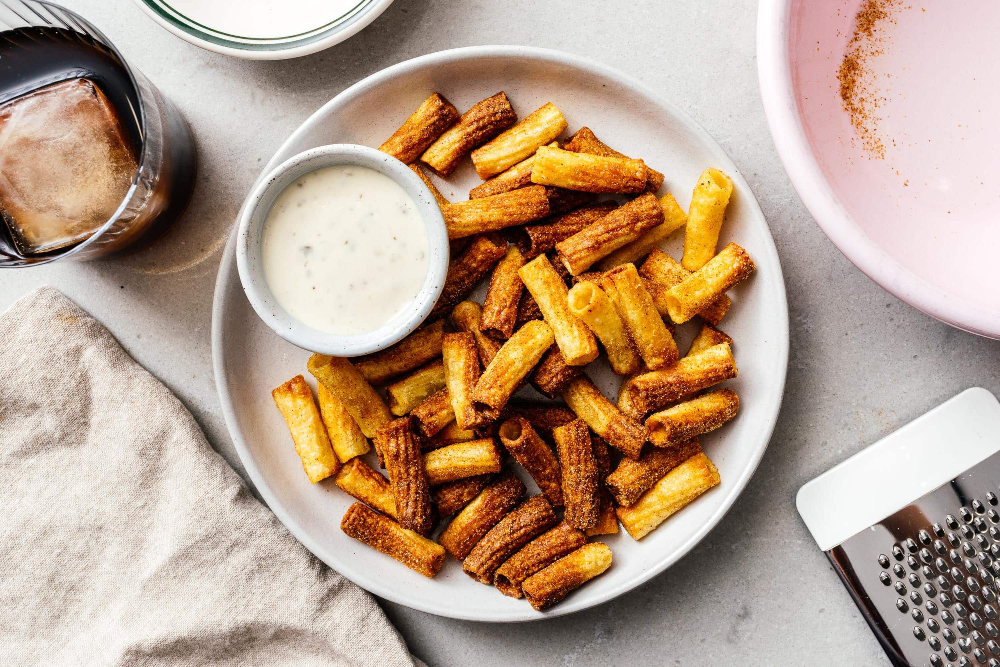
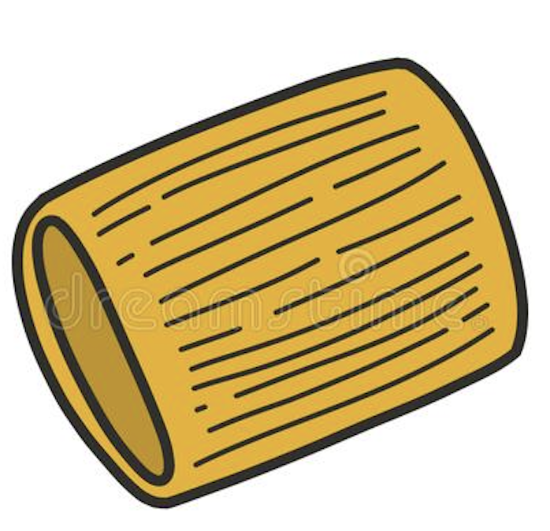
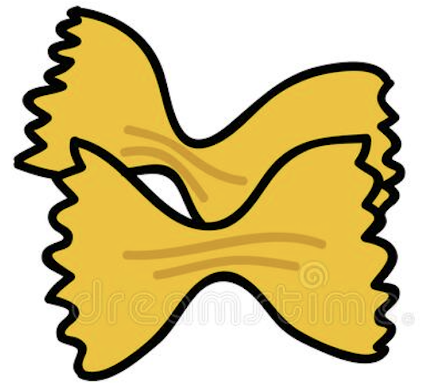

Pasta Chips

What are Pasta Chips?
Pasta chips are the latest TikTok sensation made with cooked pasta that’s tossed with olive oil, parmesan cheese and spices and then air fried until crispy! They come out so crunchy, perfect for dipping with your favorite sauce for a fun appetizer idea!
Ingredients:
- 8 ounces of Pasta: preferably a larger pasta thats easy to grab, like Rigatoni bowtie or penne
- 1 tablespoon Olive Oil: the olive oil is important for the pasta to get crispy in the fryer
- 3 tablespoons Parmesan Cheese: this is optional but great flavour and extra cripiness
- 1 teaspoon Spices: any spices will do, popular ones are garlic powder and italian seasoning
- Dip: any sort of dip will do, you can buy or make your own
Steps To Make Pasta Chips:
- Cook the pasta al denta in a pot of salted water
- Drain the pasta and transfer it to a large mixing bowl or back into the pot
- Add a tablespoon of olive oil, sprinkle parmesan cheese and the spices
- Toss well to combine and evenly coat the pasta
- Air fry at 400°F for 12-15 minutes, shaking the basket a few times
- Remove from the air fryer and allow to cool!
Enjoy!
Back To Homepage